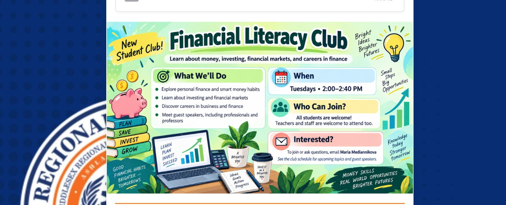
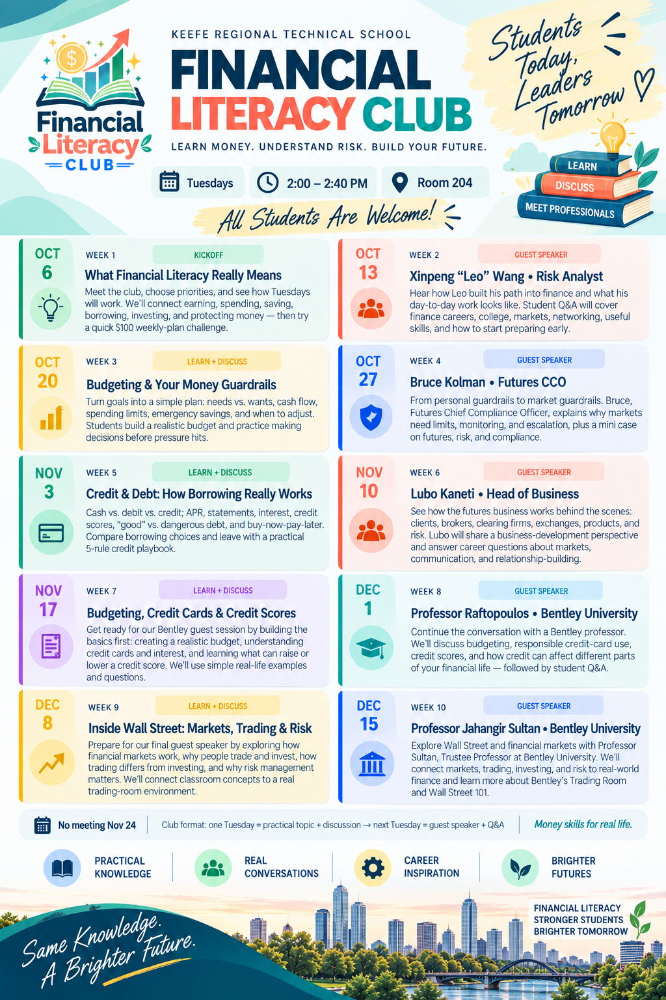

Financial
Literacy Club
A student-led extracurricular program at Keefe Regional Technical School connecting practical money skills, guest speakers, and career exploration.

Practical financial knowledge for real life.
The club focuses on budgeting, credit, taxes, college financing, investing, retirement planning, financial careers, and responsible financial decision-making. Weekly meetings combine student-friendly discussion with guest speakers from finance and academia.
Learn + Discuss
Student-friendly instruction, examples, and guided discussion.
Apply
Mini cases, simulations, budgeting exercises, and decision-making practice.
Connect
Guest speakers from finance, business, higher education, and public service.
Extend
College, career, and long-term financial planning connections.
Organized around four Massachusetts financial literacy areas.
Earning & Spending Income
Careers, compensation, budgeting, spending choices, paychecks, gross vs. net income, and taxes.
Saving Money
Banking, savings accounts, emergency funds, financial goals, and saving strategies.
Credit & Investments
Credit scores, borrowing, loans, interest, debt, investing fundamentals, diversification, and retirement planning.
Protecting Assets
Insurance, risk protection, fraud, scams, identity theft, cybersecurity awareness, and consumer rights.
The Massachusetts standards are used as an educational organizing framework. This does not imply DESE endorsement or formal curriculum approval.
Meeting schedule
Tuesdays, 2:00–2:40 PM. The program alternates practical student discussions with guest speakers and Q&A.
What Financial Literacy Really Means
Meet the club, choose priorities, and connect earning, spending, saving, borrowing, investing, and protecting money.
Xinpeng “Leo” Wang • Risk Analyst
Career path, day-to-day work, finance careers, markets, networking, useful skills, and student Q&A.
Budgeting & Your Money Guardrails
Needs vs. wants, cash flow, spending limits, emergency savings, and realistic budget-building.
Bruce Kolman • Futures CCO
Futures, market guardrails, limits, monitoring, escalation, risk, and compliance.
Credit & Debt: How Borrowing Really Works
Cash vs. debit vs. credit, APR, statements, interest, credit scores, debt, and buy-now-pay-later.
Lubo Kaneti • Head of Business
How the futures business works behind the scenes: clients, brokers, clearing firms, exchanges, products, and risk.
Budgeting, Credit Cards & Credit Scores
A realistic budget, credit cards and interest, and what can raise or lower a credit score.
Professor Raftopoulos • Bentley University
Budgeting, responsible credit-card use, credit scores, and how credit can affect financial life.
Inside Wall Street: Markets, Trading & Risk
How financial markets work, why people trade and invest, how trading differs from investing, and why risk management matters.
Professor Jahangir Sultan • Bentley University
Wall Street and financial markets, trading, investing, risk, and real-world finance.

Original club materials.
The first public version includes the current schedule, recruitment flyer, and curriculum alignment document.


Contact
Questions about the club, educational collaboration, or future guest speaker opportunities: